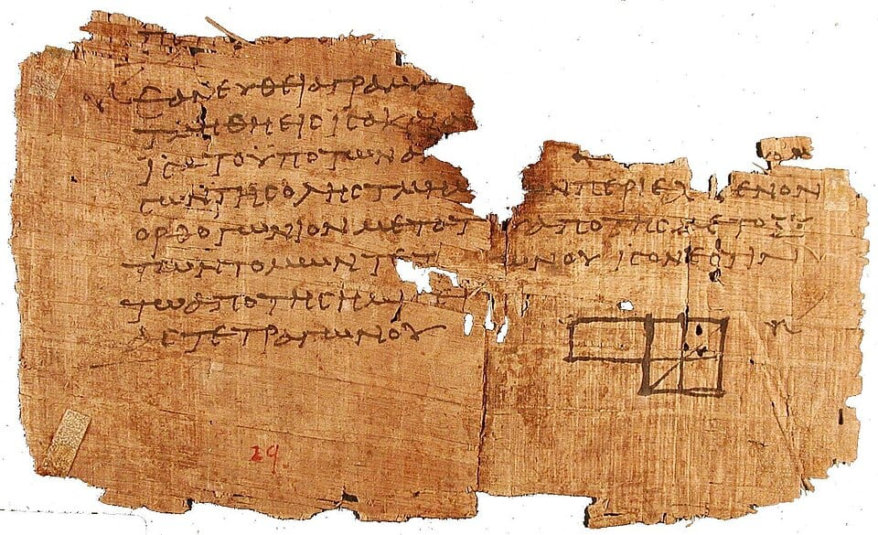
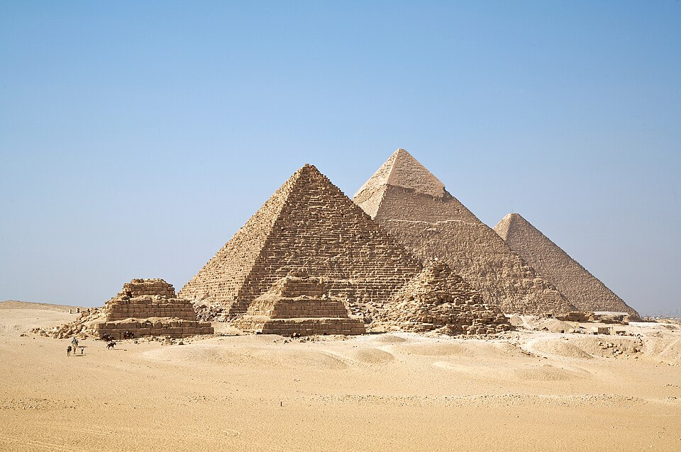

a² + b² = c² — and you will PROVE it with four triangles and one square
Arc of 80°, inscribed angle 40° — the rim of a circle always sees half
Dilate a shape by 3: perimeter ×3, but area ×9
Those three lines are geometry at the honors level. The first is the most famous theorem in all of mathematics — and in this lesson you won't just use it, you'll prove it yourself, step by justified step. The second is a circle secret that turns impossible-looking angle puzzles into one-line answers. The third is why a giant balloon needs vastly more rubber than a small one — area grows by the SQUARE of the scale. You already know that a triangle's angles add to 180°, how to fence a shape (perimeter), and how to cover it (area). Now we go deeper: we prove WHY those rules are true, we solve them with algebra, and we add powerful new tools — congruence, similarity, circle theorems, transformations, clever counting, and even logarithms.
Why do people care? Because geometry is the operating system of the physical world. Bridges stand because of triangles. GPS satellites triangulate your phone. Every video game rotates and translates thousands of points per second using exactly the transformation rules you'll learn here. Architects, astronomers, and robotics engineers all speak fluent geometry. You're about to join them.
In this lesson, you will:
- 1.Build from points, lines, segments, rays — and place them on the coordinate plane
- 2.Measure turns: angles, the two famous teams, and angle algebra
- 3.Cut parallel lines with a transversal — and PROVE the 180° triangle rule
- 4.Master triangles: the inequality, isosceles secrets, and congruence
- 5.State, prove, and reverse the Pythagorean theorem — then measure distance anywhere
- 6.Unlock polygons: angle sums, exterior angles, and counting diagonals
- 7.Derive every area formula (never just memorize!) — plus Heron's bonus
- 8.Scale shapes with similarity — and discover the k² surprise
- 9.Circle theorems: π, arcs, sectors, inscribed angles, and cyclic quadrilaterals
- 10.Transform the plane with functions: translate, reflect, rotate, dilate, compose
- 11.Count like a competitor: casework and complementary counting in geometry
- 12.Grow shapes with sequences and exponentials — tamed by logarithms
- 13.Dodge the classic mistakes (now upgraded to competition level)
- 14.Recap, then conquer 100 practice problems, then take the 🏆 Quiz
How to use this lesson: Read the sections in order — each one is built from the one before it, and every new term is defined the moment it appears. Take your time. Try every "Your Turn" box with pencil and paper, and sketch! When we prove something, read each step slowly until its reason feels obvious. That habit — justify every step — is the whole secret of honors geometry. Ready? Let's go!
📸 Pictures

A scrap of papyrus from Oxyrhynchus, Egypt, written around 100 AD. It has a diagram from Euclid's Elements and is one of the oldest pieces of Euclid ever found! See source ↓

The pyramids of Giza in Egypt, built about 4,500 years ago. Their builders needed geometry to make the sides and corners so precise! See source ↓
🗺️ Your lesson map
Points, Lines, Segments, Rays — and Where They Live 🧩Lesson 2
Angles — Measuring the Turn, Proving the Rules 🎯Lesson 3
Parallel Lines and a Transversal — and the Proof of 180° 🔍Lesson 4
Triangles — the Inequality, Isosceles Secrets, and Congruence ⚡Lesson 5
The Pythagorean Theorem — State It, Prove It, Reverse It 🌟Lesson 6
Polygons — Angle Sums, Exterior Angles, and Diagonals 🛠️Lesson 7
Area — Formulas You Can Derive, Not Memorize 🎨Lesson 8
Similarity — Same Shape, Different Size, and the k² Surprise 🏗️Lesson 9
Circles — π, Arcs, Sectors, and the Inscribed Angle Theorem 🧪Lesson 10
Transformations — Moving the Plane with Functions 🪄Lesson 11
Counting Meets Geometry — Casework and Complementary Counting 🎢Lesson 12
Sequences, Series, and Exponential Growth — Tamed by Logarithms ⚠️Lesson 13
Watch Out! Common Mistakes (Honors Edition) 🧠Lesson 14
Recap — The Big Picture 🏋️Practice Problems
100 problems to try 🏆Quiz
Test yourself: new questions every time!
📚 Picture Sources
- Picture 1 · P. Oxy. I 29. By Unknown scribe, copying Euclid. Public domain. From Wikimedia Commons: https://commons.wikimedia.org/wiki/File:P._Oxy._I_29.jpg
- Picture 2 · All Gizah Pyramids. By Ricardo Liberato. CC BY-SA 2.0. From Wikimedia Commons: https://commons.wikimedia.org/wiki/File:All_Gizah_Pyramids.jpg